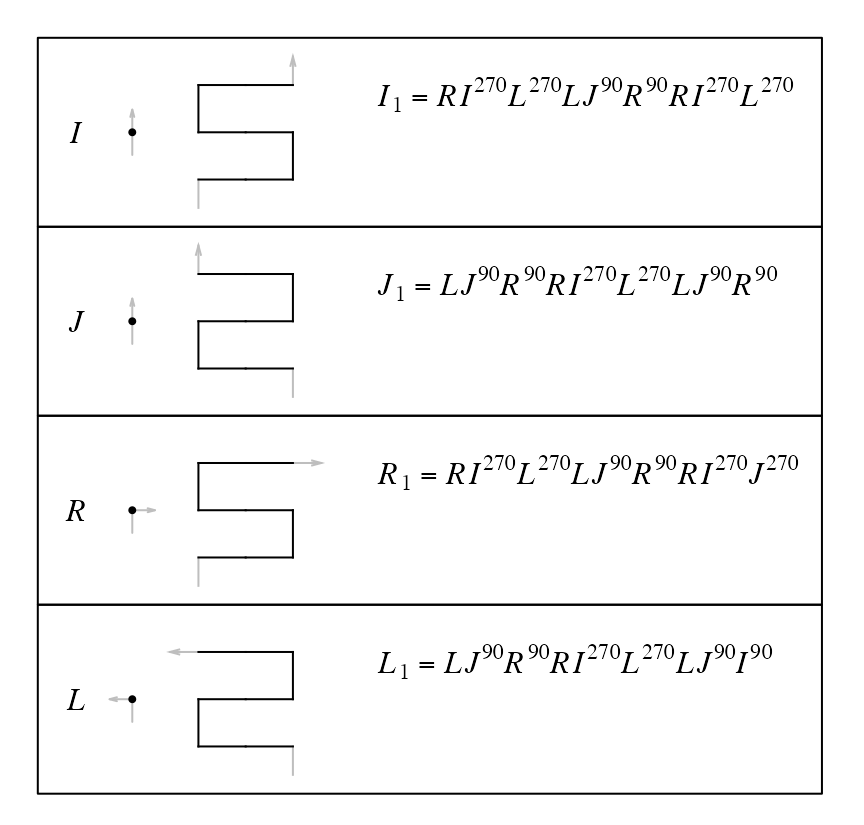
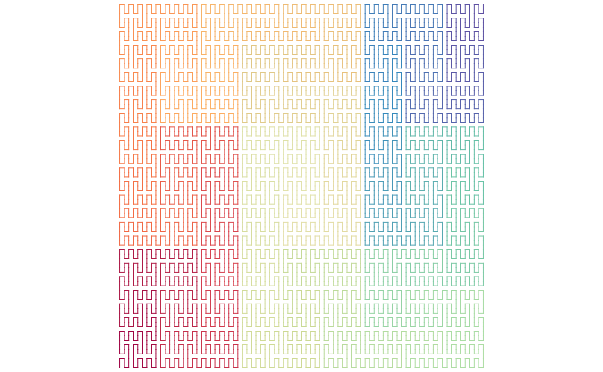
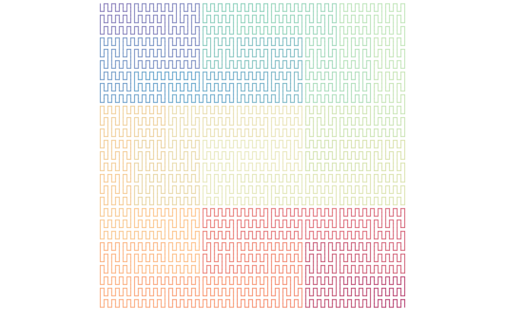

Generalized Peano Curve
Zuguang Gu (z.gu@dkfz.de)
2024-07-25
Source:vignettes/peano_curve.Rmd
peano_curve.RmdBase patterns
There are the following expansion rules from level-0 to level-1 for the Peanno curve. All these level-1 units are vertical.

I and J are the same on level-0 (i.e. going forward), but they correspond to different patterns on level-1 as we only allow a pattern to rotate, but not to flip. Also separating I from J makes only one extension from level-0 to level-1 for each base pattern.
Unlike the Hilbert curve where there are more than one transverse paths. For the Peano curve, we can simpliy specify the number of the level.
p = sfc_peano("I", level = 3)
# the same as sfc_peano("I", code = "111"), but 1 is only allowed
plot(p)
By applying the expansion rules, a Peano curve is fixed on a level \(k\). However, note each level-1 or level-\(k\) (\(k \ge 1\)) pattern can be flipped against its diagonal line without affecting the structure of other parts of the curve. Then we can have a flipped version of the original expansion rules where all level-1 units are horizontal:
draw_rules_peano(flip = TRUE)Then, for example, when expanding \(I^{(0)}\) to \(I^{(1)} = RI^{(270)}L^{(270)}LJ^{(90)}R^{(90)}RI^{(270)}L^{(270)}\), each base pattern can take its flipped version independently, also \(I^{(1)}\) as a whole can be independently flipped.
Number of different forms
From level 0 to level 1, there are two different forms: the normal one and the flipped one:
\[ n_1 = 2 \]
From level 1 to level 2, all the nine points can be expanded by choosing the normal base pattern or the flipped one. The global unit on level 2 can also be in the normal form or the flipped form.
\[ n_2 = n_1^9 \cdot 2 \]
Then we can have sequentially:
\[ \begin{align*} n_3 &= n_2^9 \cdot 2 \\ & ... \\ n_k &= n_{k-1}^9 \cdot 2 \\ \end{align*} \]
And \(n_k\) can be calculated as:
\[ n_k = 2^{9^{k-1} + ... + 9 + 1} = 2^{\frac{9^k - 1}{8}} \]
Or we can calculate it in another way by counting the total number of square units on various levels on the Peano curve. For a curve with level \(k\), the number of square unit with level \(i\) is \(9^{k-i}\). Then we sum these numbers from level \(k\) to level 1:
\[ \sum_{i=1}^{k} 9^{k-i} = \frac{9^k - 1}{8} \]
Each unit on various levels all can be flipped independently. The final number of different forms of the Peano curve on level \(k\) is:
\[ n_k = 2^{\frac{9^k - 1}{8}} \]
With combining the four base patterns and four rotations, the final number of different forms of the Peano curve is
\[ 4 \cdot 4 \cdot 2^{\frac{9^k - 1}{8}} \]
Unit flipping
We can set a global flipping rule on every level expansion.
sfc_peano("I", level = 3,
flip = c(FALSE, FALSE, FALSE, TRUE, FALSE, FALSE, TRUE, FALSE, FALSE)) |> plot()
Every unit can be manually flipped by specifying its “hierarchy index”. Splitting the curve into 9 blocks recursively, for an index of “93”, it means the 9th block in the first level of the hierarchy, and within this block, its 3rd child-block. Notice the orientation of the top-left corner of the top-right block in the right plot.
draw_multiple_curves(
p,
sfc_flip_unit(p, "93"),
nrow = 1
)
The index can also be specified as a vector, then the flipped in applied sequentially (the three units on the left of the curve).
draw_multiple_curves(
p,
sfc_flip_unit(p, c("1", "2", "3")),
nrow = 1
)The standard Peano curve
There are two ways to generate the standard Peano curve where all level-1 (9x9) unit are oriented vertically.
First, notice taking the normal expansion rules, if splitting the curves into three parts euqally, the first subunit in the second and the third parts are flipped. Then we just need to flipped these two back. Note such flipping should be applied on all levels.
In the following, flip can be set to a function accepting an argumnt n which is the number of base patterns on current level in the expansion. The self-defined function returns a logical vector with the same length as n, representing whether using the flipped rules.
sfc_peano("I", level = 4, flip = function(n) {
if(n == 1) {
return(FALSE)
}
l = rep(FALSE, n)
portion = 1
while(portion*9 <= n) {
ind = ((1:(n/3/portion))*3*portion)[rep(c(TRUE, TRUE, FALSE), n/9/portion)]
l[ind + 1] = TRUE
portion = portion*9
}
l
}) |> plot(lwd = 1)Second, we can mandatorily change all level-1 units to vertical. sfc_apply() applied a self-defined function fun on every units on a certain level (in the following example, it is applied to level sfc_level(p)-1). The self-defined function accepts one argument x which is the current unit.
p = sfc_peano("I", level = 4)
sfc_apply(p, sfc_level(p) - 1, function(x) {
if(level1_unit_orientation(x) == "horizontal") {
sfc_flip_unit(x)
} else {
x
}
}) |> plot(lwd = 1)
Or use the helper function change_level1_unit_orientation().
change_level1_unit_orientation(p, to = "vertical") |> plot(lwd = 1)
The first method generates the exact Peano curve where on every level the vertical structure is kept, but for the next two methods, the vertical pattern is only applied on level-1 while higher level can have any type of structures.
p = sfc_peano("I", rot = 90, level = 4)
change_level1_unit_orientation(p, to = "vertical") |> plot(lwd = 1)
And for the horizontal case:
p = sfc_peano("I", rot = 90, level = 4)
change_level1_unit_orientation(p, to = "horizontal") |> plot(lwd = 1)
Seed as a sequence
seed = sfc_sequence("IJILJILJILJI", rot = -90, universe = sfc_universe(SFC_RULES_PEANO))
plot(seed, grid = TRUE)